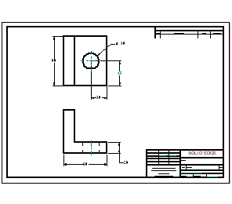

This tutorial demonstrates a typical workflow for creating a simple 2D drawing without a 3D model in Solid Edge. You will learn how to create 2D geometry, work with layers, change line styles, place and edit dimensions, create formulas between dimensions, and use the other tools available in Solid Edge that make the creation and modification of 2D geometry simple.
This tutorial is for beginners, so you do not need prior experience with Solid Edge or any other computer-aided drafting or engineering modeling system to use it.
Estimated time to complete: 30 minutes
